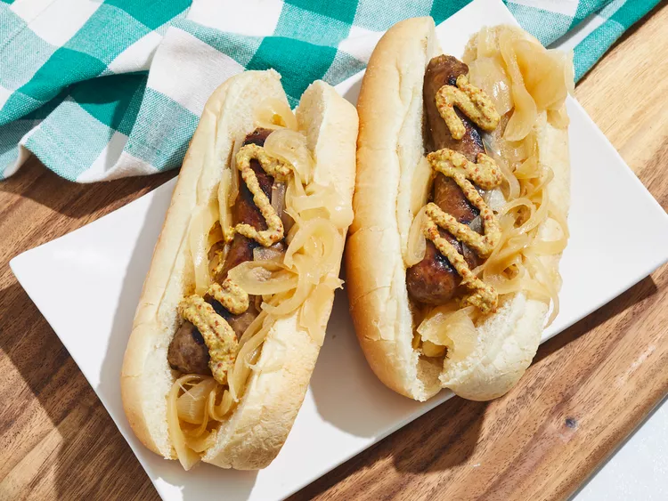

Wisconsin Bratwurst

Ingredients
- 2 pounds fresh bratwurst sausages
- 6 (12 fluid ounce) cans or bottles beer
- 2 onions, thinly sliced
- 1 cup butter
- 1 ½ teaspoons ground black pepper
- 10 hoagie rolls
Directions
-
Step 1
Prick bratwurst with a fork to prevent them from exploding as they cook; place in a large stockpot. Add beer, onions, butter, and black pepper. Place the stockpot over medium heat, bring to a boil and simmer for 15 to 20 minutes.
-
Step 2
Preheat an outdoor grill for medium-high heat and lightly oil the grate.
-
Step 3
Cook bratwurst on the preheated grill until evenly browned, about 10 to 14 minutes, turning occasionally. Serve hot off the grill with onions on hoagie rolls.